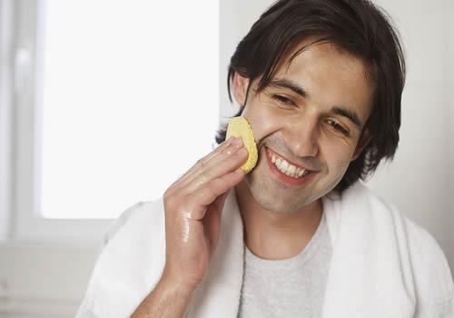

植越品读：男生美白脸部的小窍门
面部美白不仅仅只有女性朋友在追求，不少的男性朋友也一 直都很在意。那男生美白脸部的小窍门有哪些?
男人脸部美白技巧:
重视防晒
无需质疑，紫外线是脸部美白公认的杀手。想要脸部变白，防晒是关键。每天出门前，一定搽上防晒霜，并且携带防晒伞、遮阳帽、防晒衣等工具。防晒工作做好，才能一直白下来哦。
保证充足的睡眠
不知道各位型男有没有听说，好的皮肤都是睡出来的哦，每天保证足够的睡眠，对男士脸部的美白很重要。睡眠不足容易导致色素沉着，肤色暗淡，所以各位男士们，每天保持8个小时或以上的充足睡眠，坚持一阵子，你就会发现你脸部的皮肤会大大的不同哦。
补充维生素C
脸部美白的方法其实有很多的，但要数最简单实用的方法，莫过于补充足够的维生素C。每天吃一些富含维生素C的食物，如番茄、柚子、橘子、番石榴深绿蔬菜等，久而久之你的脸部就会慢慢变得白皙有光泽。
搽抗氧化防晒隔离霜
辐射也会造成脸部肤色黯黄哦，因此抗辐射也是脸部美白的重点工作。明天上班前，一定要涂抹抗氧化防晒隔离霜。特别是电脑一族，如果能每隔3至4个小时补涂一次，效果更好。
自制美白面膜敷脸
想要脸部美白，自制美白面膜敷脸，是最天然、健康、安全、简单又实用的方法。取适量蛋清和鲜奶混合搅匀，用一次性面膜纸浸透后敷于脸上，待约15分钟后，用温水洗净。每周坚持1-2次，脸上的皮肤就会变得白白滑滑的。

男生脸部美白的方法
深层的清洁
通常在经过一天的工作时间后，男士回到家就是倒头就睡，根本没有进行脸部的一个清洁。早上起床和晚上下班后一定要记得洗脸，因为这是美容过程中最重要的一步。男士在清洁脸部的时候，可以选择使用清爽不油腻的洗面乳，这样可以彻底深层的清洁掉脸上的污垢。
此外，男士也可以用热水蒸汽熏蒸面部，首先是准备一盆热水，然后放手巾到热水里浸一小会，捞起扭干水，敷于脸上。
去黑眼圈
有的经过一晚上的加班，男士就最容易产生黑眼圈，如果男士想美白要想解决这个问题，可以用冰冻过的牛奶，倒在纱布上，然后用来敷眼10分钟左右，间隔15分钟后再敷一次，这样做可以消除眼睛疲劳和减少眼部皱纹。
保持肌肤的湿度
男士美白最重要的任务是注意保持肌肤的湿度，因为这对皮肤来说是非常必需的，这是我们可以自制苦瓜面膜，用冷藏15分钟后苦瓜切成薄片，贴于脸上，15分钟后清洗干净，这样可以起到美白、保湿的作用。
最好的护肤时间
对于护肤来说，最好的护肤时间就是在要睡觉之前，想美白的男士就得这个时候拿出两到三小时进行脸部美白工作。男士们可以自制杏仁、蛋清面膜。用沸水煮软杏仁，然后搓去皮，捣成泥，与丹青拌匀即成。将弄好的面膜涂于脸上，干后用温水冲洗干净，每周一次。这样做可以恢复男士暗淡肌肤的光泽，且可使皮肤滋润、细腻，减少皱纹。
保持睡眠充足
保持睡眠充足也是美白的重要性之一，如果当天不用加班的话，也可以适当的做一些普通的保养，但是最重要的是一定要保持睡眠的充足。
补充水分
绝大部分的男士都会外出找朋友聊天，或者是做点什么事，这时最好是要准备一条湿手巾，可以随时的搽脸部，起到镇定皮肤，消除倦容和黑眼圈的效果，回到家的时候，可以做脸部按摩，补充失去的水分，保持皮肤的舒爽清凉